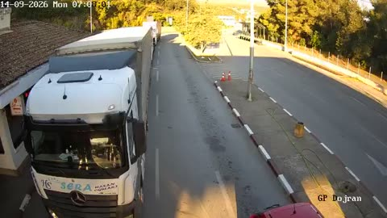

Dojran povezuje Severna Makedonija i Grčka, na putu regionalni put (uz Dojransko jezero), naspram Doirani (GR). Gasolina kombinuje graničnu policiju, kameru uživo i (gde postoji) susednu stranu radi realne procene.

Na vrhu stranice su kamera uživo i trenutna procena čekanja za oba smera, plus gužva na mapi. Za poređenje svih prelaza idi na stranicu Granice.
Dojran povezuje Severna Makedonija → Grčka, naspram Doirani (GR) na putu regionalni put (uz Dojransko jezero).
Da - Bogorodica vodi ka istoj zemlji. Kalkulator rute na Gasolini poredi prelaze kad planiraš put, a stranica Granice direktno pokazuje koji je trenutno brži.